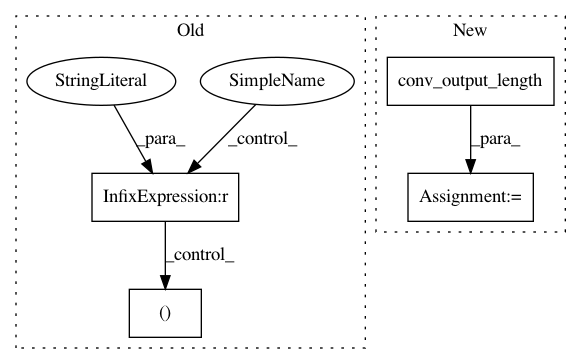

c81713367e3e97f13dd584ae8e48b79615951437,keras/layers/local.py,LocallyConnected2D,build,#LocallyConnected2D#Any#,301
Before Change
"the inputs shape " + str(input_shape))
output_shape = self.compute_output_shape(input_shape)
if self.data_format == "channels_first":
_, filters, output_row, output_col = output_shape
input_filter = input_shape[1]
elif self.data_format == "channels_last":
_, output_row, output_col, filters = output_shape
After Change
" a LocallyConnected2D layer "
"should be fully-defined, but layer received "
"the inputs shape " + str(input_shape))
output_row = conv_utils.conv_output_length(input_row, self.kernel_size[0],
self.padding, self.strides[0])
output_col = conv_utils.conv_output_length(input_col, self.kernel_size[1],
self.padding, self.strides[1])
self.output_row = output_row
self.output_col = output_col
In pattern: SUPERPATTERN
Frequency: 3
Non-data size: 4
Instances
Project Name: keras-team/keras
Commit Name: c81713367e3e97f13dd584ae8e48b79615951437
Time: 2017-02-23
Author: francois.chollet@gmail.com
File Name: keras/layers/local.py
Class Name: LocallyConnected2D
Method Name: build
Project Name: reinforceio/tensorforce
Commit Name: 26edeaf181d6ead3bd3452e4259de306abc89dd4
Time: 2019-10-31
Author: vincent.belus@mines-paristech.fr
File Name: tensorforce/core/layers/convolution.py
Class Name: Conv1d
Method Name: get_output_spec
Project Name: reinforceio/tensorforce
Commit Name: 26edeaf181d6ead3bd3452e4259de306abc89dd4
Time: 2019-10-31
Author: vincent.belus@mines-paristech.fr
File Name: tensorforce/core/layers/convolution.py
Class Name: Conv2d
Method Name: get_output_spec